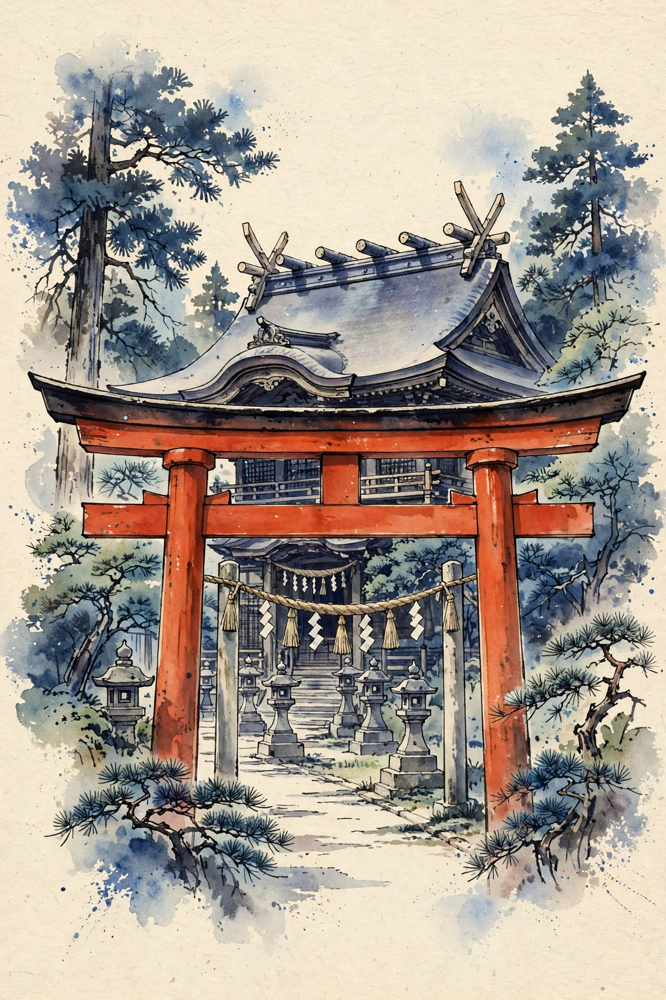

72年ぶりの御開帳が始まる――豊川稲荷、11月1日から23日まで秘仏を特別公開

城と神社にまつわる新しい動きをお伝えするニュース記事です。出典は宗教法人妙厳寺のプレスリリース（2026年10月24日、PR TIMESに掲載）です。愛知県豊川市にある豊川稲荷（圓福山妙厳寺、豊川市豊川町1番地）では、2026年11月1日（日）から11月23日（月・祝）まで、1954年以来72年ぶりとなる御開帳が執り行われます。なお豊川稲荷は「稲荷」の名で親しまれていますが、正式には曹洞宗の寺院・妙厳寺です。神社検定の学びとしては、稲荷信仰の広がりと、寺社を問わず受け継がれてきた信仰の節目として押さえておきたい話題です。
72年ぶりの御開帳――御縁柱と善の綱
御開帳に先立ち、10月24日（土）には御開帳を象徴する御縁柱（ごえんばしら）が本殿前に建立されました。御縁柱は、御開帳の際に本殿前に建てられる角塔婆で、神仏の威徳をたたえ、参拝者の諸願成就を祈念するものとされます。秘仏・豊川吒枳尼眞天（とよかわだきにしんてん）は、その身代わりである前立尊像と、さらに前々立尊像が、五色の「善の綱」で大本殿前の御縁柱につながります。御開帳期間中、参拝者は柱に触れることで尊天さまとの結縁（けちえん）が叶い、尊天さまに直接触れることと同じ御利益があるとされます。
期間中の主な行事――開扉から大祭、閉扉まで
主な関連行事は次のとおりです。10月31日（土）に眞殿開扉式・開扉巡拝・縁繋式、11月1日（日）に御開帳開始、11月21日（土）・22日（日）に御開帳大祭、11月23日（月・祝）に眞殿閉扉式が行われます。23日間という会期のなかでも、開扉と大祭、閉扉はそれぞれ節目になる日です。訪れる際は、御開帳の公式サイトで最新の案内を確認してください。
検定の学習ポイント
神社検定・旅の学びと結びつくテーマです。第一に「御開帳とは何か」。御開帳は、ふだんは公開されない秘仏を、期間を限って特別に公開する行事です。第二に「稲荷信仰の広がり」。稲荷の神は、食物や商売、暮らしの守りとして、各地の神社や寺院で広く信仰されてきました。第三に「午年の節目」。今回の御開帳は午年にあたり、前回の1954年も午年でした。72年という間隔そのものが、この行事の貴重さを物語っています。
会期は11月23日までです。御開帳大祭が行われる11月21日・22日は混雑も予想されます。出かける前に、公式の案内で日程と参拝の方法を確認してからお出かけください。
神楽すずから一言：72年ぶりという言葉の重み――御縁柱に触れて結縁を願う仕組みは、信仰のかたちそのものを感じられる体験ですね。開扉から閉扉まで、節目の日をたどる旅も楽しそうです。
城と神社のニュースや検定の情報は、公式SNSでもお知らせしています。InstagramとThreadsの @tabi.kentei をフォローして、最新情報をチェックしてください。
このテーマの柱ページ：城と神社のイベント予定表｜これからの行事と特別公開
この記事のおすすめ本

表紙イメージ（実際の表紙とは異なります）
PR 専門書
土の城指南
著者：西股総生
石垣の城だけでなく、土塁と堀で守る中世の「土の城」の歩き方を指南。縄張図の読み方や城跡の見方が身につき、山城歩きがぐっと深くなります。
Amazonで見るKindle版あり／価格はAmazonでご確認ください／リンク先：Amazon.co.jp

パッケージのイメージ（実際の商品とは異なります）
PR プラモデル
童友社 1/450 日本の名城 ジョイジョイコレクション 松山城 プラモデル（JJ-7）
メーカー：童友社（DOYUSHA）
愛媛県松山市の松山城（伊予松山城）を題材にした、童友社のプラモデルです。スケールは1/450で、シリーズ名は「日本の名城 ジョイジョイコレクション」、品番はJJ-7。対象年齢は15歳以上と表示されています。画像はパッケージのイメージです。
Amazonで見る価格はAmazonでご確認ください／リンク先：Amazon.co.jp

表紙イメージ（実際の表紙とは異なります）
PR 入門書
ゼロから分かる！ 図解日本の城入門
著者：小和田泰経
縄張・堀と石垣・天守のしくみまで、イラストでやさしく解説。城めぐり初心者が最初に持つ一冊として、検定の教科書と合わせて読むのにおすすめです。
Amazonで見る価格はAmazonでご確認ください／リンク先：Amazon.co.jp
当サイトは、Amazon.co.jpを宣伝しリンクすることによってサイトが紹介料を獲得できる手段を提供することを目的に設定されたアフィリエイトプログラムである、Amazonアソシエイト・プログラムの参加者です。価格・在庫はリンク先でご確認ください。